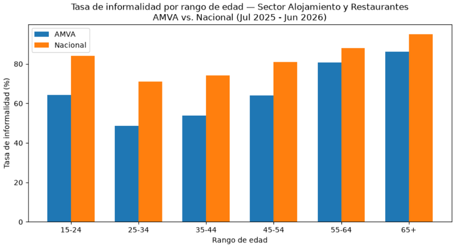

Proyecto de Macroeconomía · 2026-2
Dinámicas Laborales e Informalidad en el Sector de Restaurantes y Alojamiento
Colombia ↔ AMVA
Manuela Jaramillo Aguilar · Luisa Giraldo Serrano
Martin Restrepo · Felipe Fernández Aldana
01 / El tamaño del sector
personas ocupadas en 2025
del PIB nacional en 2024
del empleo del país
Si esta actividad cambia sus condiciones de contratación, el efecto alcanza a una parte importante del empleo colombiano.
02 / La contradicción
Informalidad: casi 8 de cada 10 trabajadores del sector
Informalidad: 6 de cada 10 trabajadores del sector
Como referencia, el promedio de informalidad de toda la economía colombiana es 55,8 %.
03 / Un dilema que afecta a todos
En un sector intensivo en mano de obra, una presión simultánea sobre costos e ingresos puede llevar a ajustar turnos y contratación.
Los ingresos laborales son promedios nacionales, no salarios exclusivos del sector. Las cifras de EMA son variaciones entre ene.–ago. 2025 y 2024.
04 / La edad cambia el riesgo
La informalidad cae al avanzar en la vida laboral y vuelve a subir en edades mayores.

05 / El dato encuentra una voz
¿Hasta dónde estudiaste?
“Yo terminé el colegio”.
“Yo nunca tuve como una experiencia ni en la cocina, ni en la de la recepción”.
06 / Mecanismo económico · tecnificación
Puede funcionar para un negocio pequeño, pero concentra muchas tareas en las mismas personas.
Permite ordenar pedidos, pagos y roles; la ganancia depende de cómo se implemente.
07 / Mecanismo económico · rotación
La necesidad de personal fluctúa.
Entra gente con disponibilidad parcial, incluidos estudiantes.
Cuesta retener experiencia e invertir en formación continua.
Vimos personal joven y turnos variables; Alejandra relató que hace varias funciones. Son observaciones cualitativas, no una tasa de rotación medida.
08 / Una diferencia que vimos en campo
En los locales visitados observamos una presencia relativamente pareja de hombres y mujeres, incluso en cocina.
Las visitas fueron pocas y ocurrieron en horarios específicos. Complementan los datos del DANE; no los desmienten.
09 / La estructura del sector
de los restaurantes son establecimientos independientes
contribución del sector a la creación de micronegocios en el IV trimestre de 2025
restaurantes cerraron en 2024
variación de ventas reportada por ACODRES
Muchos negocios pequeños entran al mercado, pero una demanda y unos márgenes frágiles dificultan sostener inversiones, personal estable y costos de formalización.
10 / Mecanismo económico · tamaño
Viviana trabaja con su esposo en una vivienda adaptada.
Con menos ventas, el mismo costo pesa más en cada operación.
En establecimientos más organizados, como el caso relatado por Mauricio, la nómina y los trámites se gestionan con apoyo especializado. La escala cambia la capacidad de cumplir.
11 / Mecanismo económico · contratar
12 / Mecanismo económico · cuándo se trabaja
Los costos laborales son una barrera central para formalizar, como explica Otero-Cortés et al. (2025). Esto no vuelve informal automáticamente cada contrato, pero eleva la presión sobre negocios de márgenes estrechos.
13 / La decisión del trabajador
Viviana trabajó formalmente desde los 17 años. Luego abrió un restaurante con su esposo.
“¿Qué te hizo cambiar a ti de un trabajo formal a uno informal?”
“Uno mismo es su jefe, uno mismo maneja sus horarios y eso.”
Alejandra también prefiere la flexibilidad de horarios y pagos, aunque reconoce los riesgos de no tener estabilidad.
14 / Lo que conecta todos los hallazgos
Busca personal solo cuando lo necesita y reduce compromisos fijos.
Acepta turnos flexibles, aunque pierda estabilidad y protección.
Resultado observado: 79 % de informalidad sectorial en Colombia y 60 % en el AMVA.
Es una interpretación económica de los datos y entrevistas, no una estimación causal.
15 / Una política del Ministerio de Trabajo
Sabemos que la informalidad no desaparecerá de inmediato: hoy muchas personas dependen de estos ingresos. Sí podemos reducir las barreras que hacen tan difícil trabajar y emprender formalmente.
16 / Cómo funcionaría
Reunir RUT, registro, permisos e impuestos en un solo lugar.
↓ tiempo, desplazamientos y costos de trámiteConectar hoteles y restaurantes con SENA, Colegio Mayor y Mariano Moreno.
↓ dificultad para encontrar empleo formalBanco de las Oportunidades y proveedores financian equipos a negocios similares.
↑ productividad; ↓ “gota a gota”17 / La idea que queremos dejar
La informalidad se sostiene por costos, tamaño, demanda irregular y una flexibilidad que muchas personas necesitan. No desaparecerá de un día para otro, pero podemos hacer menos costoso y más útil dar el paso hacia la formalidad.
Gracias.
18 / Fuentes estadísticas
DANE. (2025). Cuenta Satélite de Turismo 2024. Boletín.
DANE. (2025). Gran Encuesta Integrada de Hogares: insumos para la mesa de concertación 2026. Informe.
DANE. (2025). Encuesta Mensual de Alojamiento: boletines 2025. EMA.
DANE. (2026). GEIH: mercado laboral, diciembre de 2025. Boletín.
DANE. (2026). Empleo informal, octubre–diciembre de 2025. Boletín.
DANE. (2026). GEIH: mercado laboral, junio de 2026. Boletín.
DANE. (2026). Microdatos de la GEIH, 2025–2026. Archivo.
19 / Fuentes y trabajo de campo
DANE. (2026). Encuesta de Micronegocios, IV trimestre de 2025. Boletín.
DANE. (2026). Producto Interno Bruto, IV trimestre de 2025. Boletín.
Otero-Cortés, A. (coord.). (2025). Nueva evidencia sobre la informalidad laboral y empresarial en Colombia. Banco de la República. DOI.
Congreso de Colombia. (2025). Ley 2466 de 2025. Texto legal.
ACODRES. (2025). Información sectorial de la industria gastronómica. Sitio institucional.
Salario Mínimo Colombia. (2026). Estimación del costo salarial mensual. Tabla de referencia.
Equipo del proyecto. (2026). Entrevistas a Alejandra, Viviana, Mauricio y Simón; observación de campo; Tabla 3 del informe. Alejandra trabaja en San Jerónimo, fuera del AMVA.